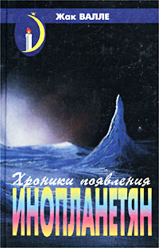

Хроники появления инопланетян

Эта книга – попытка построить тоненький и хрупкий мостик между химерой и мифом. Это не научный труд. Можно было бы сказать о нем, что он философский, если бы существовала какая-нибудь философия в том, что следовало бы назвать «недостоверным». Это не документальная книга, но если бы мечты играющих детей и крики женщин, сожженных заживо, могли бы опираться на какие-нибудь документы! И тем не менее многие жизни изменились (в том числе тайно, иногда совершенно неуловимо), и было много невинных жертв сожжено заживо только потому, что они верили в мечту. Эта книга – дань уважения всем тем, кто когда бы то ни было решился защищать свою мечту.
ГЛАВА 1. ВИДЕНИЯ ПАРАЛЛЕЛЬНОГО МИРА.
Семь посетителей Фациуса Кардана.
Воздушные народы: «нечистая сила», или добрые соседи.
Фольклор в стадии становления.
ГЛАВА 4. МАГОНИЯ… ТУДА И ОБРАТНО!.
Где вновь посещается Нью-Гэмпшир.
ГЛАВА 5. В ОБЪЯТИЯХ БЕССМЕРТИЯ.
ПРИЛОЖЕНИЕ.
Выдержки из основного (общего) каталога наблюдений за нло на земле начиная с 1868 года.